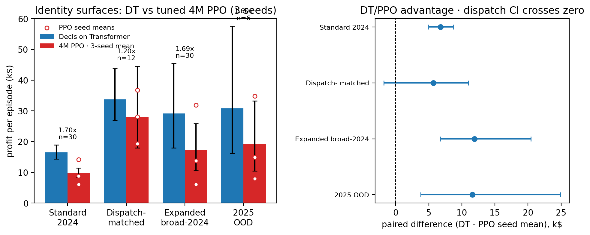

Distilling a Planner into a Decision Transformer for Multi-Market Battery Dispatch
In simulations of Australia’s National Electricity Market (NEM), a Decision Transformer trained on a planner’s decisions earns more than a tuned PPO baseline on four held-out price-taking evaluations and passes a separate market-impact test.
Simulator-based preprint by Hou Nam U (Victor) · Not peer reviewed
Change where the training decisions come from
At each five-minute step, the simulator asks the battery to choose how much energy to buy or sell and how much capacity to offer across all eight frequency control ancillary service (FCAS) markets. The objective deducts battery wear from energy and FCAS earnings.
The initial Decision Transformers learned from trajectories logged by reinforcement-learning policies. None of the tested changes within that approach closed the FCAS-bidding gap to PPO. The paper switches the data source to a planning teacher. The earlier experiments suggest a data bottleneck, but do not isolate it as the sole cause.
From historical prices to a battery decision
- Historical dataSeasonal energy-price profile; current market observations during teacher rollouts.
- Planning teacherCharge waypoints → wear-aware energy planning → greedy FCAS bids.
- Train the studentLearn from the teacher’s actions and the planner-value prompt.
Prepared separately: A backward pass with no terminal charge target builds the Jt(SOC) table. Its negative is the value signal for training and price-taking inference.
- Recent observations and actionsRequest a value lookup from the cached table or use the fixed fallback.
- Trained Decision TransformerOne forward pass. No waypoint model or planning solver is called.
- Energy and FCAS commandsApply the next action in the simulator, then repeat with the updated observation.
Inside the Decision Transformer
Read the stack from the bottom up, then look inside its attention layer. There is no separate encoder or cross-attention.
Two questions, one shared source
Every token is projected into queries, keys and values. A head learns what to look for, matches its query to visible keys, then blends the corresponding values.
- Q · Query
- What am I looking for?
- K · Key
- What can this token match?
- V · Value
- What information can it pass on?
Select one of the six head groups:
Sharing K/V does not make the two heads identical: each query computes its own weights. There are 12 query heads and six shared K/V pairs, with 64 features per head.
See a worked example of two heads
Suppose two visible state tokens carry values 2 and 10 on one feature. Both heads read those same values, but their queries score the keys differently:
- Head A puts 75% on the earlier state: 0.75 × 2 + 0.25 × 10 = 4.
- Head B puts 75% on the current state: 0.25 × 2 + 0.75 × 10 = 8.
Illustrative numbers only. Real heads mix vectors across the allowed tokens.
What can a query see?
- Earlier valueVisible
- Earlier stateVisible
- Earlier actionVisible
- Current valueVisible
- Current stateQuery
- Current actionMasked
The state token can use earlier actions and the current planner value, but not the action it is about to predict.
head(Q, K, V) = softmax(QKᵀ / √64 + mask) VRoPE adds position information to Q and K. The coloured tokens show mask rules, not measured attention weights or fixed roles for any trained head.
How the shipped prompt is selected
rtg_mode="auto" uses the state-dependent prompt on the tested price-taking surfaces. Under the tested market-impact model it instead supplies a fixed zero prompt (rtg0.0). This is a robustness choice, not a universal optimum: the state-dependent prompt can still work under impact, and the converse test of the constant prompt on the headline price-taking surfaces was not run for this checkpoint.
Higher mean simulated profit than PPO on all four surfaces
In these “identity” tests, the battery does not change the prices it receives. We compare the Decision Transformer (DT) with tuned proximal policy optimisation (PPO). The evaluated configuration uses the state-dependent prompt, the branch selected by auto on these surfaces. Profit is in Australian dollars (A$) per episode, net of modelled degradation.
Compare A$/episode within each row, not across rows: episode durations and battery specifications differ. n counts matched scenario cells, not independent regions; on the expanded and out-of-distribution (OOD) surfaces, multiple starts are averaged within each cell.

Scroll the table sideways to see every column.
| Surface | n | DT A$/episode | PPO A$/episode | DT ÷ PPO | Paired difference [95% CI], A$ | DT as % of teacher |
|---|---|---|---|---|---|---|
| Standard 2024 | 30 | 16,501 | 4,303 | 3.84× | +12,198 [9,181, 14,738] | 77% |
| Dispatch-matched | 12 | 33,791 | 18,818 | 1.80× | +14,973 [4,794, 22,663] | 70% |
| Expanded broad-2024 | 30 | 29,124 | 4,350 | 6.70× | +24,775 [13,509, 41,434] | 132% |
| 2025 OOD | 6 | 30,791 | 4,817 | 6.39× | +25,974 [12,708, 49,850] | 276% |
Dispatch-matched also includes a replay of recorded Dalrymple North dispatch in the simulator. The mean profit favours the DT, but the paired bootstrap interval includes zero. This is supporting evidence, not a settlement backtest. Explore the matched rollouts.
How the policies operate the same battery
Choose a month to inspect the saved six-day South Australian dispatch-matched rollouts. DT, PPO and recorded-dispatch replay use the same price path and the same 8 MWh / 30 MW Dalrymple North battery. Each trace is one episode, not an average or a realised settlement outcome.
The interactive charts need JavaScript and the site’s saved trace data. You can also view the paper’s revenue breakdown (PDF).
Source: the shipped v2cal dispatch-matched runs cited in provenance E3 and D2. Download the plotted series (JSON).
The fixed fallback beats PPO under modelled price impact
The impact model adjusts the simulated energy price with a piecewise merit-order curve and reduces FCAS prices according to battery enablement relative to estimated market depth. It changes the battery’s settlement prices, not the dispatch of the whole market.
The shipped rtg0.0 fallback beats PPO in 9/9 scenario–battery cells. The paired mean advantage is A$167,099 per episode (95% bootstrap CI [A$101,213, A$227,362]; paired Wilcoxon p = 0.0039).
| Battery | Ratio of means |
|---|---|
| Small | 4.36× |
| Hornsdale-class | 4.70× |
| Torrens Island-class | 4.67× |
What the tests do and do not establish
- Tested: held-out dates, including 2025 in regions seen during training, plus a separate test with a per-interval price-impact approximation. The teacher and evaluation share a simulator, and the results depend on the battery efficiency and degradation assumptions.
- Not tested: unseen regions, live-market readiness or sim-to-real transfer. The impact model does not re-clear the market or model competitors’ bids and network constraints.
- Uncertainty: some surfaces have few cells and cells from the same region may be correlated. The paired intervals are the primary statistical evidence; they do not imply that every cell favours the DT.
- Open ablation and reproduction caveat: the study does not isolate whether the planner-value prompt improves on reward-derived return conditioning on the same corpus. The scaling recorded in the checkpoint sidecar is authoritative for inference but does not reproduce exactly from the available corpus.
See §7 of the preprint and the modelling caveats.
Read, inspect or reproduce
Latest preprint (PDF)
Method, evaluation, limitations and appendices.
LaTeX source
The manuscript behind the preprint.
GitHub repository
Simulator, policy implementation, evaluation configs and tests.
Shipped model on Hugging Face
aemo_dt_sdp_jtsoc_v2cal.pt, inference sidecar and seasonal price profiles.
Hugging Face dataset repository
Use dt_trajectories_jtsoc_v2cal_conservative.parquet for the shipped corpus. dt_trajectories_jtsoc_combined.parquet remains available as the historical v1 corpus.
Provenance table
Claim-by-claim links to the numerical evidence.
Audit material
Saved statistics, audit scripts and dated findings.
Start with the reproduction instructions in the repository README to verify the market-impact result from saved cell-level profits without retraining.
Household / Ausgrid solar-battery control
The residential benchmark studies solar self-consumption and retail tariffs. In its modern telemetry re-baseline, the reported net-of-wear gain is limited to the unconstrained short held-out test on real data; longer and constrained tests are net-negative and can clip at state-of-charge limits. The efficiency-matched perfect-foresight oracle still leads, and the previous forecasting advantage was not sustained after recalibration.